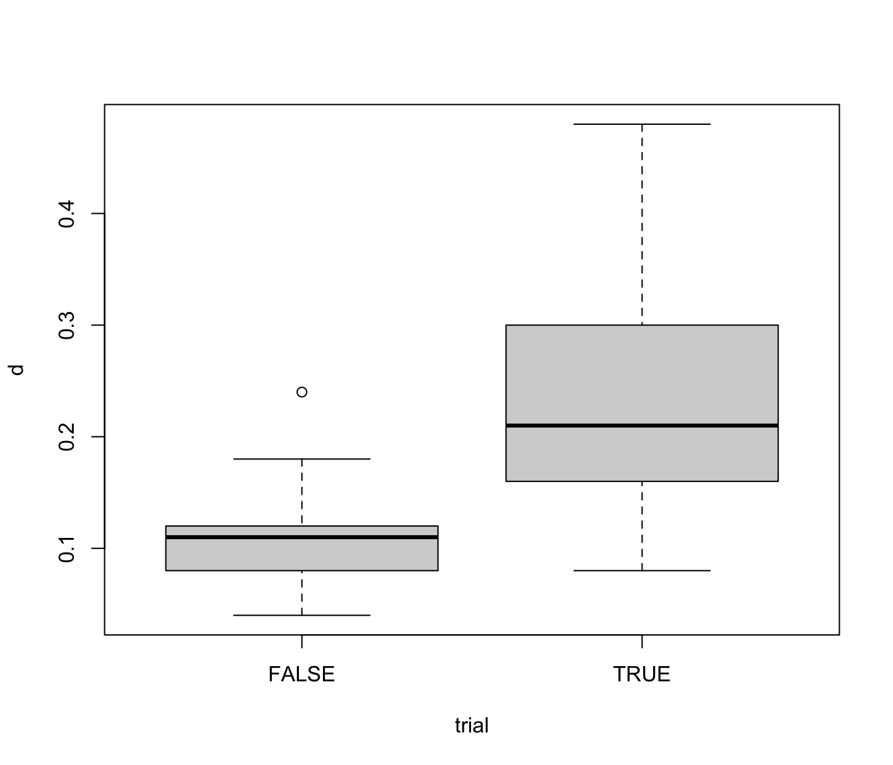

Orange juice data
orangejuice.RdFrozen orange juice concentrate is packed in 6-oz cardboard cans. These cans are formed on a machine by spinning them from cardboard stock and attaching a metal bottom panel. A can is then inspected to determine whether, when filled, the liquid could possible leak either on the side seam or around the bottom joint. If this occurs, a can is considered nonconforming. The data were collected as 30 samples of 50 cans each at half-hour intervals over a three-shift period in which the machine was in continuous operation. From sample 15 used a new batch of cardboard stock was punt into production. Sample 23 was obtained when an inexperienced operator was temporarily assigned to the machine. After the first 30 samples, a machine adjustment was made. Then further 24 samples were taken from the process.
data(orangejuice)Format
A data frame with 54 observations on the following 4 variables:
- D
number of defectives
- size
sample sizes
- trial
trial samples (TRUE/FALSE)
References
Montgomery, D.C. (1991) Introduction to Statistical Quality Control, 2nd ed, New York, John Wiley & Sons, pp. 152--155.
Examples
data(orangejuice)
orangejuice <- transform(orangejuice, d = D/size)
describe(orangejuice, by = trial)
#> ── trial = FALSE ───────────────────────────────────────────────────────────────
#> Obs Mean StdDev Min Median Max
#> sample 24 42.5000 7.07107 31.00 42.50 54.00
#> D 24 5.5417 2.14637 2.00 5.50 12.00
#> size 24 50.0000 0.00000 50.00 50.00 50.00
#> d 24 0.1108 0.04293 0.04 0.11 0.24
#>
#> ── trial = TRUE ────────────────────────────────────────────────────────────────
#> Obs Mean StdDev Min Median Max
#> sample 30 15.5000 8.8034 1.00 15.50 30.00
#> D 30 11.5667 5.1171 4.00 10.50 24.00
#> size 30 50.0000 0.0000 50.00 50.00 50.00
#> d 30 0.2313 0.1023 0.08 0.21 0.48
boxplot(d ~ trial, data = orangejuice)

plot(d ~ sample, data = orangejuice, type = "b", pch = ifelse(trial, 1, 19))